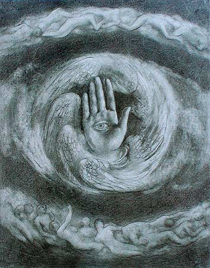

The Divine World .../Kalil Gibran
  |
| Sun Myung Moon Uppenbarelsen! Jesus Kristus 1960 1936 sedan 2000 år... |
Messias! |


6 Febr 2003
Låt oss vara glada och jublaoch ge honom äran.
Ty Lammets bröllop har kommit,
och hans brud har gjort sig redo.
(Upp 19:7)
Hela Uppenbarelsen på svenska (lämplig för utskrift)
INTRODUKTION
Alla, utan undantag, kämpar för att uppnå lycka. Det första steget i att uppnå detta mål är att övervinna nuvarande olycka. Från små enskilda frågor till historiens globala händelser, är alla ett uttryck för människors liv, som hela tiden strävar efter att bli lyckligare. Hur kan då lycka uppnås? Varje person känner glädje när hans/hennes önskan uppfylls. Ordet "önskan" kan dock misstolkas. Detta beror på att alla nu lever under förhållanden som kan driva önskan i riktning mot det onda snarare än i riktning mot godhet. Önskan som resulterar i orättfärdighet kommer inte från "människans ursprungliga sinne"; Det vill säga, ett innersta jag som gläds åt Guds lag. Vägen till lycka uppnås genom att övervinna önskan som leder till det onda och genom att följa en önskan som leder till godhet. Människans ursprungliga sinne vet att ond önskan endast kommer att leda till olycka och elände. Detta är verkligheten i människors liv: man famlar i skuggan av döden medan man söker efter livets ljus.
Har någon människa, genom att utföra onda begär, kunnat finna lycka, där det ursprungliga sinnet kan finna glädje? Svaret är nej. När man når föremål för onda begär, drabbas man av samvetet. Skulle föräldrar kunna lära barnen att göra ont, eller en lärare instruera sina elever att fullfölja orätt? Återigen svaret måste bli nej. Det är människans natur ursprungliga sinne att hata det onda och att upphöja godhet.
De Gudomliga Principerna, eller Principerna, läran hos Enighetskyrkan, kan delas in i tre delar. Den viktigaste delen är “Skapelsens Princip”, vilken förklarar hur Gud skapade Universum.
Eftersom Gud är en påtaglig varelse av det unika, goda och eviga idealet, så blev också människan skapad att bli det ideala förkroppsligandet av godhet. I vilken synd och lidande skulle bli en motsägelse och omöjlighet. Den verklighet av motsägelse och ondska som människan befinner sig i, är ett resultat av att hon förlorat sitt ursprungliga värde genom syndafallet. Därför kallar kristna detta tillstånd för “människans syndafall”. Principerna förklarar detaljerna för fallet. Såsom motivation och skeende, syndens ursprung och satans verkliga identitet. Allt detta kommer under kapitlet “Människans Fall”.
Människan som fallit i synd måste gå vägen till frälsning genom Guds välsignelse. I Principerna så är frälsning detsamma som återupprättelse. Med andra ord syftet med frälsning är att återvända till det ursprungliga tillståndet före fallet. Därför är Guds löfte om frälsning egentligen löftet om återupprättelse.
Enligt vilken princip har Gud arbetat för mänsklighetens frälsning? För att klargöra hela syftet med frälsningens process så finns kapitlet “Principen för Återupprättelse”.
Skapelsens princip, Människans Fall och Principen för Återupprättelse, är de tre huvuddelarna i Principerna.
På jorden har funnits många religioner och till och med dagens kristna är uppdelade i flera hundra samfund. Vad kan då vara meningen med att en ny “Enighetskyrka” skapas i vår tid?
Gud är levande och arbetar. Både genom historien och i människans sinne har Gud alltid lämnat ett klart synligt spår av sitt livsverk. I kontrast till detta hur har människan, objektet för Guds arbete varit? Har hon alltid stått stilla utan framåtskridande. Eller har hon ändrat sig och ständigt förbättrat sin inre standard. Till exempel det andliga tillstånd och den intellektuella nivå som Gud måste arbeta med vid olika perioder i mänsklighetens historia.
Om människan inte fallit så hade hon återspeglat Guds fullkomlighet (Matt. 5:48), och förverkligat Guds karaktär Jo. 14:20), så att Gud kunnat ha ett direkt förhållande med henne. Men på grund av sitt fall, har hon varit i ett tillstånd av separation från Gud. Med andra ord hon föll och blev en varelse i synd. Som är motsatsen till Guds vilja. Om vi skulle tala om hur människans andlighet och intellekt påverkades av fallet, så kan vi säga att dom sjönk till noll.
Andlighet och intellekt hos den fallna och förfallna människan har gradvis upplysts genom Guds återupprättelse. Allteftersom människans andliga och intellektuella nivå har utvecklat sig i varje tidsålder, så har också Gud reviderat sätten att undervisa människan och förhålla sig till henne. Med andra ord, på Abrahams tid, då andlighet och intellekt var extremt lågt, så var Gud tvungen att leda människan på så sätt att hon fick offra till honom. Den tidens människor var alltför omogna för att kunna följa lagar och andra bud av högre ordning. Åtskilliga hundra år senare, på Mose tid, så kunde Gud fullgöra sin plan genom Lagen. Och 1600 år senare, så gav Gud evangeliet i en nivå anpassad till den tidens andlighet, istället för att upprepa lagar och bud.
Det faktum att det judiska folket som så hängivet trodde på Gud, inte kände igen Jesus som frälsaren, är det största brottet i Återupprättelsens historia.
Dom misslyckades inte bara att känna igen honom, dom övergick till det extrema att misstro honom, kalla honom demonernas furste och till sist till och med få honom korsfäst.
Vad ledde till allt detta ?
På den tiden följde Israels folk Gud genom sina traditioner med lagarna. Men Gud började nå människor direkt genom Evangeliet. I sken av dessa historiska fakta, så ser vi att allteftersom människans andlighet har utvecklats, så har också Gud utnyttjat högre nivåer att nå människan. Målet för den levande guden och hans plan är inte att nå människor som är fossiler utan snarare människor som verkligen lever andligt och intellektuellt.
Vem är nutidens objekt för Gud?
Det är inte människorna på Jesu tid för 2000 år sedan. Inte heller Moses folk för 3600 år sedan. Inte heller den primitiva människan ännu längre tillbaka. Utan det är dagens människa som lever här och nu. Ingen kan idag förneka att kyrkorna har förlorat sin andliga kraft att attrahera och fånga unga människor. därför måste den levande Gud ge ut en ny sanning, en ny tolkning av sanningen. För att kunna leda dagens mänsklighet till frälsning och en ny tidsålder.
Vi läser Jesu ord i Bibeln. “Detta har jag sagt till er i bilder. Det kommer en tid då jag inte längre skall tala i bilder utan med klara ord låta er veta allt om Fadern.” (Joh. 16:25) eller “Jag har mycket att säga er, men ni förmår inte ta emot det nu. Men när han kommer, sanningens ande, skall han vägleda er med hela sanningen.” (Joh. 16:12) och “Du måste profetera på nytt om många länder och folk och språk och kungar.” (Upp 10:11). Alla dessa citat vittnar att i den “yttersta tiden” skall en ny tolkning av sanningen komma. Men eftersom det är en ny tolkning kommer den till en del i konflikt med traditionell tolkning.
Jesus talade till exempel utifrån Gamla Testamentet. Men vid den tiden var folket bokstavligen bundna av ordet i Gamla Testamentet och kunde därför inte förstå Jesus. Jesus lärde dom att ödmjuka sig för att kunna motta det nye ordet. “Nej nytt vin skall hällas i nya vinsäckar”. (Luk 5:38)
Principerna baseras inte på traditionell teologi. Inte heller upprepas gamla predikningar. Principerna innehåller en ny uppenbarelse genom Sun Myung Moon, som i detalj klargör Guds vilja och hans frälsningsplan.
Pastor Moon fann inte sin uppenbarelse genom filosofiska eller religiösa studier. Utan Gud uppenbarade den direkt till honom.
Vi vet att Gud arbetade genom Noa och Abraham.
Och vi vet säkert att Gud uppenbarade Ordet genom Moses och Jesus.
Kan då inte samma levande Gud ge en ny uppenbarelse idag på samma sätt ?
Vad kyrkorna behöver nu är inte en ny mänsklig tolkning av Bibeln. Vad som gäller nu är hur Gud tolkar den för oss. Och när vi lever för Gud enligt hans vilja så fullbordar vi hans vilja. Låt oss överväga detta genom att öppna våra sinnen och hjärtan.
Eftersom kyrkan inte kan fortsätta som den är, behöver vi inte då något nytt ? Tror vi inte att många religiösa verkligen borde vörda Gud nu. Kan vi glömma det snabba förfallet hos vår ungdom ? Tror vi verkligen att nästa generation har något hopp utan att bry sig om Gud ? Förstår vi inte att det är nu som Gud talar och ger mänskligheten ny riktning ?
Gud har redan brutit tystnaden.
Men hur ?
Kommer du endast att höra Guds röst i åskans dunder eller finna honom i jordens stora omvälvningar ?
Historiskt så har Guds röst till människan varit lågmäld men ändå har den tjänat som starkaste källan till liv åt människan. Uppenbarelsen som Gud gav pastor Moon skedde i tysthet borta i Östern. Men den har givit världens ungdom ny glädje, nytt hopp och nytt liv från djupet av deras hjärtan. Hur kan ungdomar från 120 nationer, vars hudfärg, kulturella tradition och livsstil är så olika, alla finna nytt liv, ny mening och ny entusiasm i att följa Gud ?
Härmed introducerar vi Principerna som har livskraften att djupt röra vid människans tanke och ande och att förändra en människa till en ny karaktär centrerad på Gud.